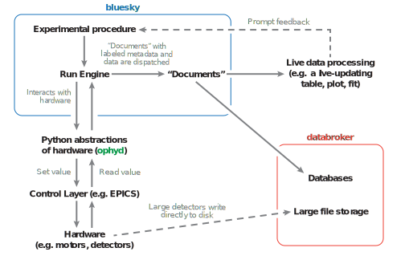
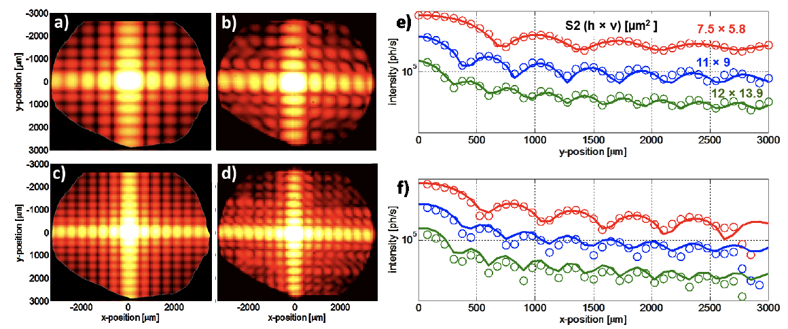
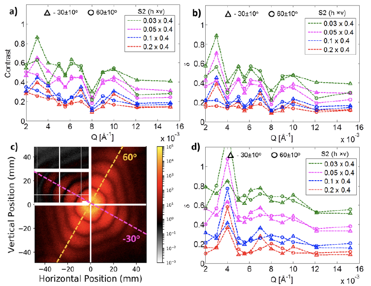

How to "step" and "fly" with Bluesky?
Maksim Rakitin (NSLS-II)
and the Bluesky Project Contributors
(NSLS-II, APS, LCLS-II, ALS)
for NOBUGS 2018, October 23, 2018
Brookhaven National Lab, Upton, NY
User Facilties Have a Data Problem
... and many Data Opportunities!
It starts at data acquisition.
The solution has to start there too.
Status Quo:
Data and Metadata are Scattered
- Some critical context is only in people's heads
- Many file formats (tif, cbf, Nexus, other HDF5, proprietary, ...)
meta_data_in_37K_fname_005_NaCl_cal.tif- "Magic numbers" buried in analysis tools
- Notes in paper notebooks
What's the problem?
- Not machine-readable or searchable
- Relationship between any two pieces of data unclear
- Inhibits multi-modal work
- Inhibits code reuse
- Not streaming friendly
Design Goals
for an end-to-end data acquisition and analysis solution that leverages data science libraries

Figure Credit: "State of the Stack" by Jake VanderPlas, SciPy Conference 2015
Technical Goals
- Generic across science domains
- Lightweight
- Put metadata in a predictable place
- Handle asynchronous data streams
- Support multi-modal: simultaneous, cross-beamline, cross-facility
- Support streaming
- Cloud friendly
- Integrate with third-party (meta)data sources
Bluesky Architecture
Layered design of Python libraries that are:
- co-developed and compatible...
- ... but individually usable and useful
- with well-defined programmatic interfaces
Looking at each component, from the bottom up...
Device Drivers and Underlying Control Layer(s)
You might have a pile of hardware that communicates over one or more of:
-
 Experimental Physics and Industrial Control System (EPICS)
Experimental Physics and Industrial Control System (EPICS)
- LabView
- Some other standard
- Some vendor-specific, one-off serial or socket protocol
Ophyd: a hardware abstraction layer
- Put the control layer behind a high-level interface with methods like
trigger(),read(), andset(...). - Group individual signals into logical "Devices" to be configured and used as one unit.
- Assign signals and devices human-friendly names that propagate into metadata.
- Categorize signals by "kind" (primary reading, configuration, engineering/debugging).
Bluesky: an experiment specification and orchestration engine
- Specify the logic of an experiment in a hardware-abstracted way. Bluesky says a detector should be triggered; ophyd sorts out how.
- First-class support for adaptive feedback between analysis and acquisition.
- Data is emitted in a streaming fashion in standard Python data structures.
- Pause/resume, robust error handling, and rich metadata capture are built in.
DataBroker: rich search and access to saved data
- An API on top of a database (e.g. MongoDB)
- Search on arbitrary user-provided or automatically-captured metadata.
- Streaming-friendly (lazy)
- Exactly the same layout originally emitted by Bluesky, so consumer code does not distinguish between "online" and saved data
Key Goal of DataBroker: Keep I/O Concerns Separate!
- The system is unopinionated about data formats.
- Any file I/O happens transparently: the user never sees files, just gets data in memory (e.g. a numpy array).
- Your detector writes in a special format? Register a custom reader at runtime.
- Importers and exporters for some common file formats are built in. More are on the way...
Event Model
Consume from Interfaces, not File Formats
- Unopinionated about file formats
- Separates I/O from science logic
- Plays well with streaming / cloud
- Separates semantics from on-disk serialization and transport mechanism
- Can change storage with no change to consumer code
- Live data and saved data can be fed into the same consumers ("streaming first!")
Minimalist and Extensible
Bluesky emits documents, streamed or in batches
- Bluesky is responsible for organizing metadata and readings from hardware into valid documents.
- Sometimes the readings come one at a time and Events are emitted steadily during an experiment.
- In special applications (commonly, fly scans) the readings come from the hardware in bulk and Events are emitted in batch(es).
Payoff:
Easy and robust integration with existing software
A Gaussian is fit to a stream of measured data using the Python library lmfit (from U. Chicago / APS).

Proof of concept:
In this scan, each step is determined adaptively in response to local slope.

The system is designed to make fast feedback easy to write.
LCLS's Skywalker project builds on this to automatically deliver the photon beam to a number of experimental hutches at LCLS.

A stream of slices is tomographically reconstructed using tomopy (APS).

It took one TomoPy developer and one Bluesky developer less than 20 minutes to write this.
See more details at http://nsls-ii.github.io/cookbook/live_recon.html
Real-time Data Analysis at APS

Data is streamed from APS to Argonne Leadership Compute Facility. Results are immediately visualized at APS.
The Xi-cam 2 GUI / plugin framework from CAMERA
has adopted Bluesky's Event Model
for its internal data structures.

Comparison of experimental data with simulations at the NSLS-II CHX beamline (diffraction and scattering)
|  |  |
Links
- Live, Public Demo Deployment (using Jupyter):
try.nsls2.bnl.gov - Documentation:
nsls-ii.github.io - Code and Arguments about Code:
github.com/NSLS-II - These Slides:
mrakitin.github.io/nobugs-2018-slides
We're Hiring!
- Scientific Software Developer:
https://tinyurl.com/nsls2developer1 - Computer Software Engineer:
https://tinyurl.com/nsls2developer2